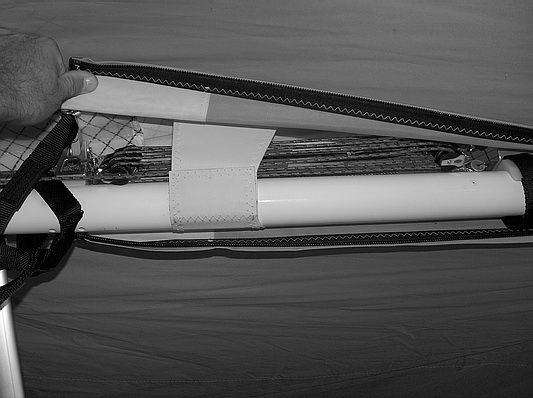

|
Dear Friends,
As of today we have two confirmed cases of the crossbeam failure on a
Combat L. In both cases the crossbeam broke while the pilots were performing
aerobatics, in particular - wingovers.
Given the fact that:
- The structure of Combat L gliders is certified by both DHV and BHPA;
- 100 % of crossbeams on our gliders is passing load test before being
mounted on the glider;
- The present design of the crossbeam has been used on the previous
models of our gliders for years without any failure, logging thousands
of flight hours on hundreds of gliders all around the world;
we have started our investigation looking for any new and unknown circumstances
that could contribute to the failures.
As a result of the investigations that have included
- close inspection of the broken crossbars
- breaking of several crossbars from different production series in
different load conditions at our factory
- three trips to both DHV and BHPA load test in order to break crossbars
under load in real conditions, inside the glider structure.
We have reached the following conclusions:
- While all our crossbars satisfy the certification requirements, we
have identified a production batch that has lower safety margin than
the rest. All failed crossbars are from this batch. In order to exclude
the possibility of further accidents, we have decided to recommend grounding
all affected gliders until their crossbeams are changed. In order to
know whether your glider is affected and arrange for the change of the
crossbar, please contact your dealer. Your crossbar will be replaced
free of charge. (Only part of Combat L gliders is affected - please
check with your dealer or contact us directly with the serial number
of your glider.)
- We would also like to insist that a Combat L glider, as well as any
other hang glider, is not designed for aerobatic flights and ignoring
this fact can be dangerous. Due to the wide speed range of modern gliders,
it is possible to overload any glider during aerobatic flights. Please
be aware of the fact that modern gliders require higher piloting culture.
- We have also found during our tests that normal certification load
test procedure may not simulate closely enough the loads on the glider
during aerobatic flights. We have determined the new load test procedure
and in the near future we are planning to have our gliders re-tested
at BHPA in the manner that should mimic the dynamics of the hang glider
during aerobatics.
In regard to two other accidents
with our gliders, the results of investigations are as follows:
- in the case of Bo Hagewood's accident the investigation didn't allow
to determine one definite cause. It could be either the crossbeam failure
or the rupture of thin 2 mm diam. side wire. Aeros is planning to bring
forward a suggestion to prohibit the use of 2 mm side wires in the competitions.
- We are still investigating the fatal accident of Luciano Nunes de
Oliveira that happened in Brazil this summer.
We hope to rich definite conclusions after receiving additional information
from FPVL.
The accident was caused by apparent simultaneous failure of both VG rope
and safety tension wire.
In spite of a very good accident report produced by FPVL, we think that
some of it's conclusions are not correct and may not contribute to prevent
further similar accidents.
FPVL believes that the main cause of the accident was the failure of
the safety wire due to shock load: i.e. insufficient wire diameter.
- We, as well as other mainstream hang glider manufacturers, have used
2.5 mm safety tension wires for more than 10 years on all our gliders
without any breaking because of the shock load.
- We are aware of several incidents of VG rope breaking in flight, including
one in extreme conditions - during a loop made by a very heavy pilot,
i.e. maximum load - without the resulting safety wire failure.
- During this summer we have seen a case of VG rope breaking and found
a slightly damaged safety wire on that glider. The cause of both VG
rope breaking and damage of the safety wire was a completely wrong VG
mechanism mounting after a glider repair after the previous accident.
- In the photographs of Luciano's glider we could see that the right-hand
upright (the one that carries VG rope) was changed, making some wrong
mounting of the VG system at least possible.
Therefore, pending the definite investigation of the causes of this accident,
we recommend to all pilots:
- Check the sweep wire for wear where it passes around hang point channel.
- Check that the routing of all VG ropes and pulleys is clear and straight.
- Check that the rear VG pulley is attached to the hang point tower
and that both front and rear pulleys are screwed in properly. See the
attached picture
- Check the VG operation - the pull should be light initially, becoming
harder as the VG tight limit is reached. The return on release should
be smooth.
In case of any doubt, please, contact your dealer.
Fly safely!
Team Aeros

|